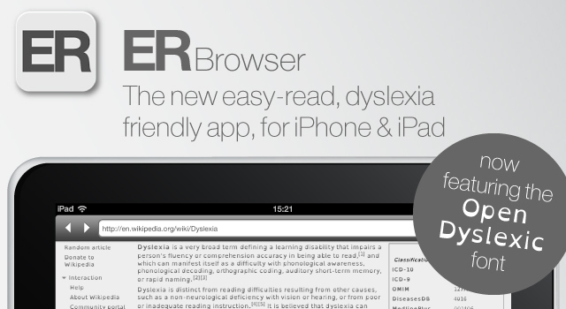

ERBrowser adds support for OpenDyslexic

When I first made OpenDyslexic, aside from my friends and associates with dyslexia that volunteered, I tested it heavily across as many devices as I could. But I also wanted to show and promote practical applications of the typeface, and other assistive helps (namely, web-accessibility(github)). I made browser plugins to force stylesheets on pages you visited, and on iOS, after frustrating experiences with bookmarklets, I created openWeb, a browser that forces pages to display with OpenDyslexic. It also provides additional features that enable easier reading: alternate paragraph & item shading, low contrast, and a reading mode. For a while, it was the only browser of it’s kind. It got good reviews that I appreciate very much. It introduced OpenDyslexic to new people that needed it. But it’s also been busy. To the point that I can’t keep on top of all the commitments and bug requests and other responsibilities I have. Put quite simply, I’m swamped!
Just this past week, the makers of ERBrowser have released the newest version of their web browser. It adds more control to how you view websites, including control over letter spacing, colors, sizes and font choices. Among those choices is OpenDyslexic. This is great news, and a welcome development! And it provides a commercial accessibility application with support that I simply can’t provide. As such, I intend to scale back my work on openWeb. I’ll still work on bug fixes, but I’ll be slow on fulfilling feature requests. openWeb was never a pay-for application. It does not pay my bills, or provide me with food. I still work two jobs for that.
I will be actively recommending this iOS browser wherever appropriate. If you just don’t have money, try openWeb and see if it helps. If it does, you really should consider ERBrowser. It doesn’t cost much ($2.99. Only 2 candy bars), has many more useful features, and will be more actively developed and supported than openWeb can be. And it will give you control over how you view the internet with more customizable options that openWeb can give.
Download it now! (iOS: iPhone/iPad/iPod Touch)